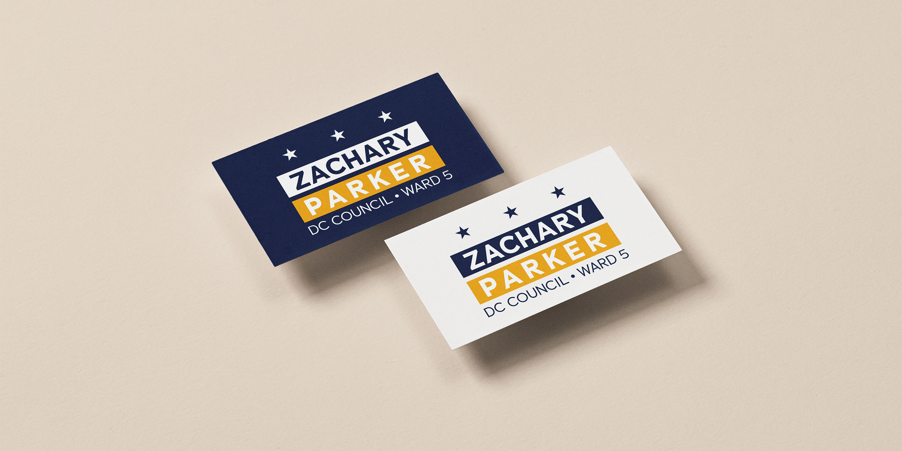
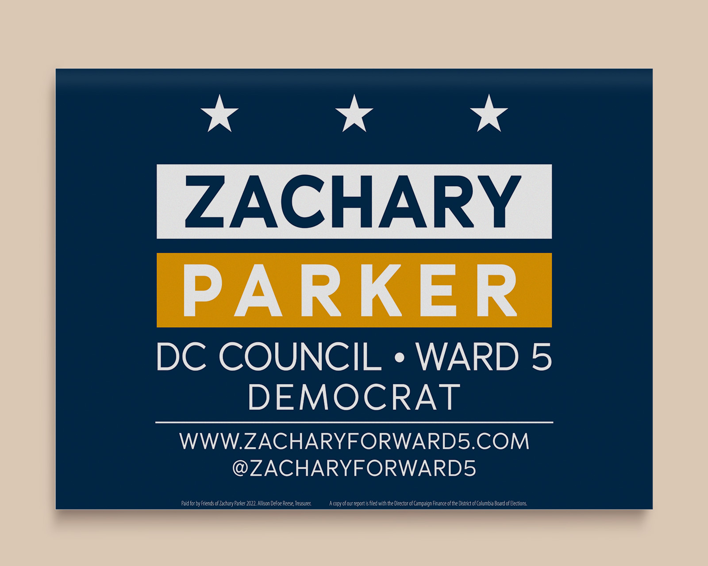
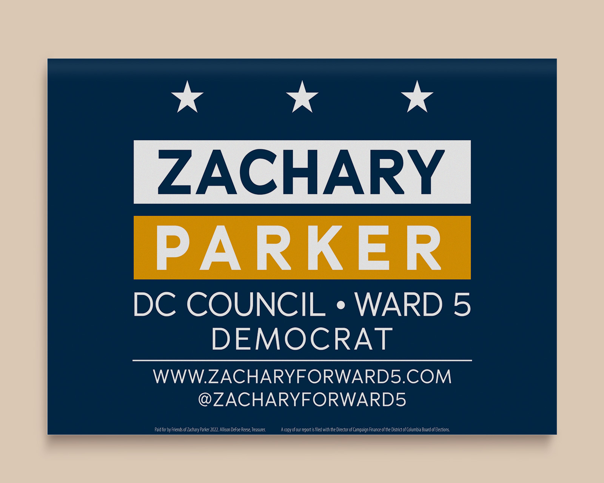
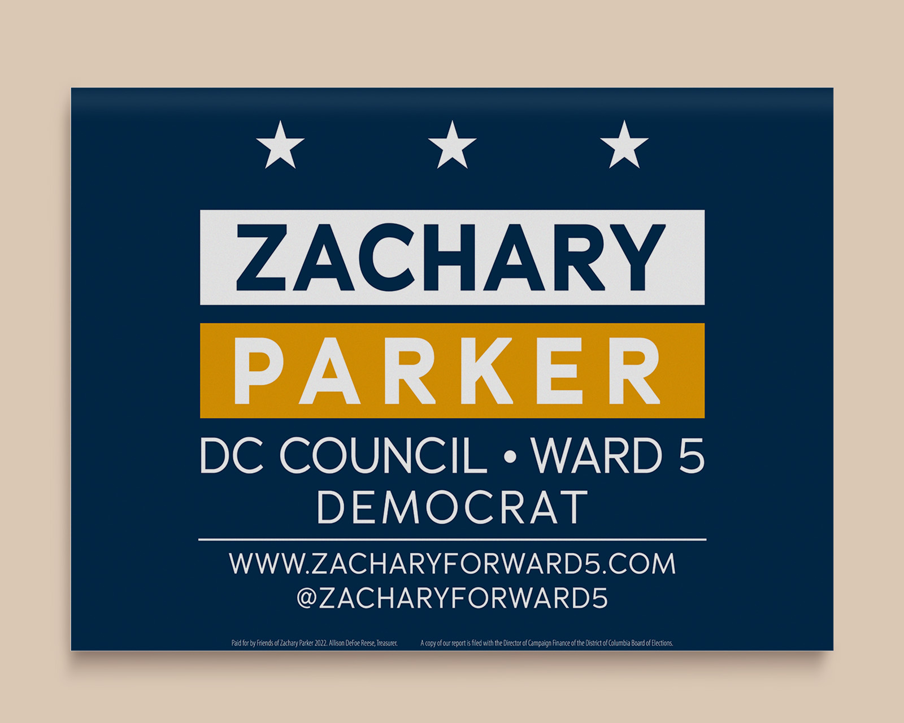

Zachary Parker
August 2021
Brand Designer
Visual Identity & Print Design
For Zachary Parker, the Ward 5 representative and president of the Washington, D.C. State Board of Education, I developed a visual identity that is both informative and visually striking. The design seeks to balance imagery and text, creating a cohesive representation of Parker’s brand. The logo was kept simple yet meaningful, reflecting Washington, D.C.'s iconic flag with its two stripes and three stars. The color palette combines a traditional campaign blue with an energetic orange, symbolizing Parker’s dynamic energy and his fresh ideas for the future of Washington, D.C.

 

View Other Work
